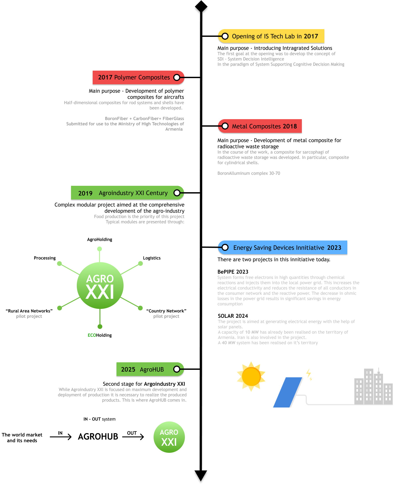
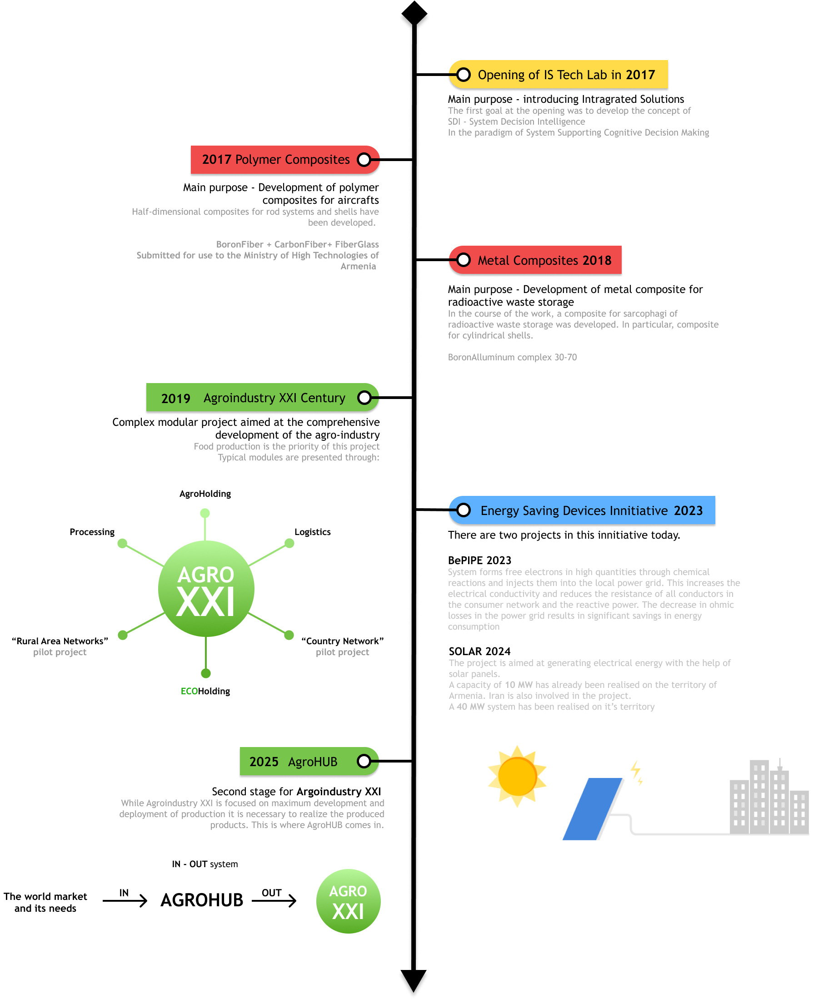

INTEGRATED SYSTEMS
Our philosophy defines our name
We follow a specific method to solve every problem building a system to solve a problem using an intelligent system toolkit. Our approach allows us to build complex and flexible solutions for complex hierarchical systems that operate over a long period of time. We are a company that is not project-oriented. For all active developments a working group is recruited, which implements the project. The experience of the company is made up of employees with more than 50 years of experience in applied scientific, technical and business projects.
IS was founded in Armenia in 2017 as a continuation of the ideas of companies working in the 80s in the field of rocket and space technology, construction of underwater vehicles.
about us
nshanyan yuri
Managing Director, Doctor of Technical Sciences
Associate Professor, Candidate of Physical and Mathematical Sciences
Hello, my name is Yuri
For more than 17 years of my life I have worked in the field of aerospace and subsea hull elements design from laminated fibre composites
I obtained my postdoctoral experience in the United States, specializing in the development of computer-aided methods for the optimal design of components in extreme environments. During this period, I also developed and published with my partner prof M. Pappas, detailed programs for fiber composite material structures in the Journal of Spacecraft and Rockets, a prestigious scientific journal published by the American Institute of Aeronautics and Astronautics (AIAA)
During the Soviet era, I worked on the BURAN project, a reentry spacecraft program, where I applied algorithms for constructing systems of polymodal optimal structural elements. I also served as the chief designer of the USSR state program “Electronization of the Agro-Industry” in Armenia. Over nine years, I gained extensive experience in the agro-industrial sector, focusing on the organization, design, and implementation of digital control technologies in areas such as animal husbandry, crop production, and soil science
With 30 years of experience, I have successfully developed systemic business development programs in collaboration with companies from Germany, France, Denmark, and the US.
IS App Lab is the quintessence of my experience, which is to implement intelligent systems design methods in order to solve problems of technological fields. From technical to business solutions

 
